De archivos climáticos a patrones interpretables
EPW · EMA · Weather Data · Climate Consultant · Python/Jupyter
Descargar al inicio:
Requisitos:
Dinámica
El instructor muestra cada paso y los asistentes lo replican con la misma carpeta de trabajo.
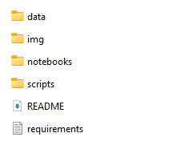
Antes de abrir software, definimos el problema:
Entender clima es identificar cuándo, cuánto y con qué frecuencia ocurren condiciones críticas.
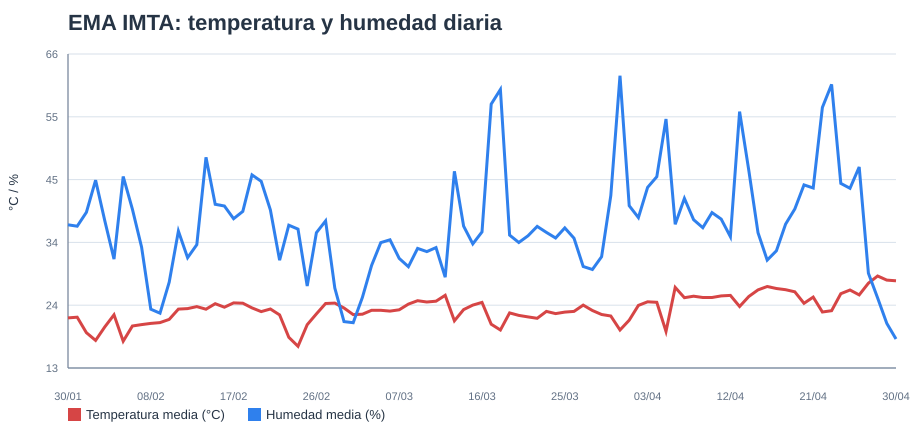
Los datos permiten pasar de percepción a lectura técnica:
Una gráfica sin contexto no basta: se revisan fuente, periodo, unidades y resolución temporal.
Flujo del taller:
Fuente
Revisión
Visualización
Pregunta
Interpretación
EMA
EPW
La EMA muestra una ventana reciente observada; el EPW permite leer el comportamiento anual de referencia.
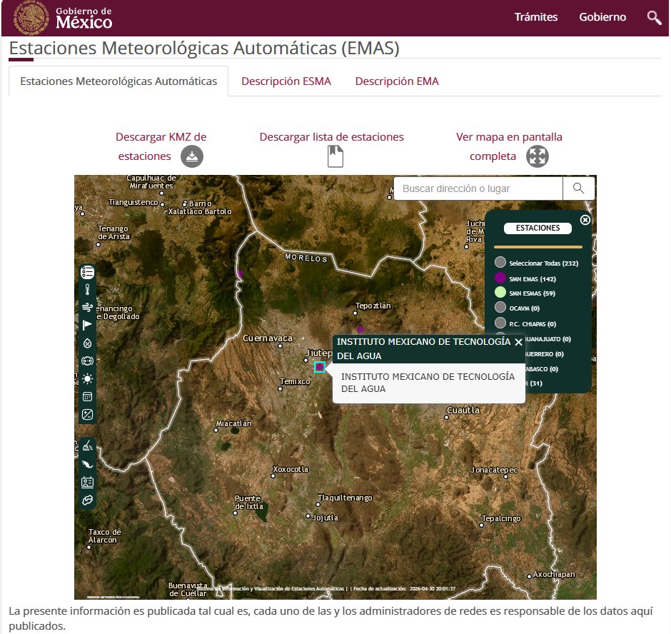
Ejemplo del taller:
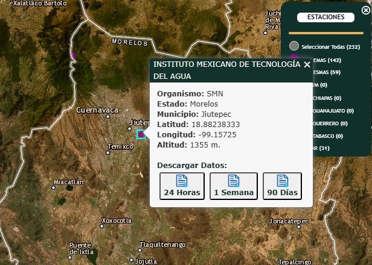
Antes de graficar:
Proceso:
MEX_MexicoMOR_MorelosEnlaces útiles:
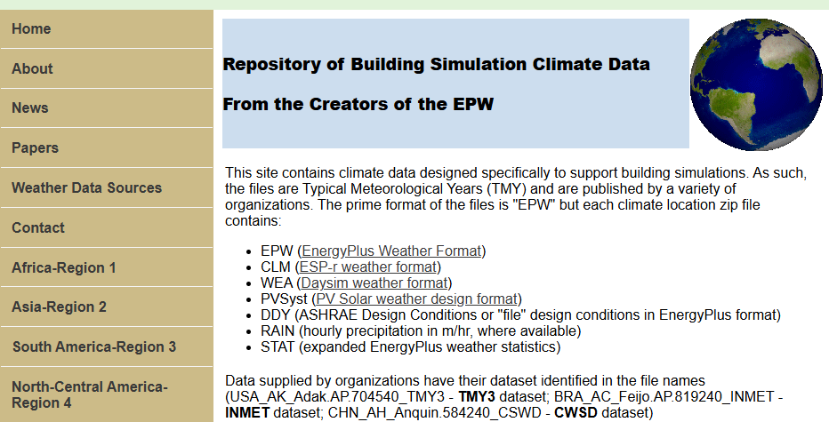
Ruta dentro del sitio:
North-Central America - Region 4MEX_MexicoMOR_MorelosCuernavaca-Matamoros.Intl.AP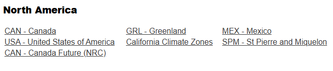
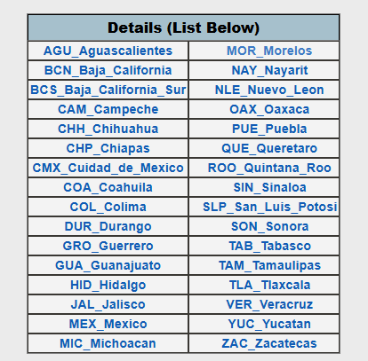
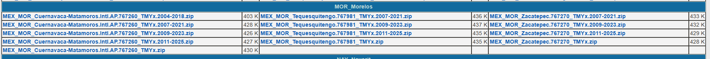
Archivo usado:
MEX_MOR_Cuernavaca-Matamoros.Intl.AP.767260_TMYx.epw
Características:
Uso durante el taller:
La demostración en vivo debe terminar con una pregunta: ¿qué mes u hora parece más crítica?
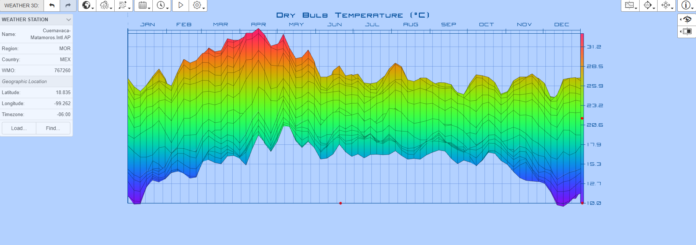
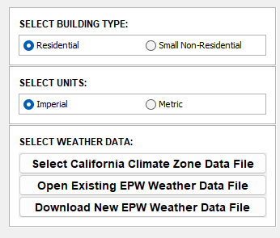
Secuencia:
Preguntas de lectura:
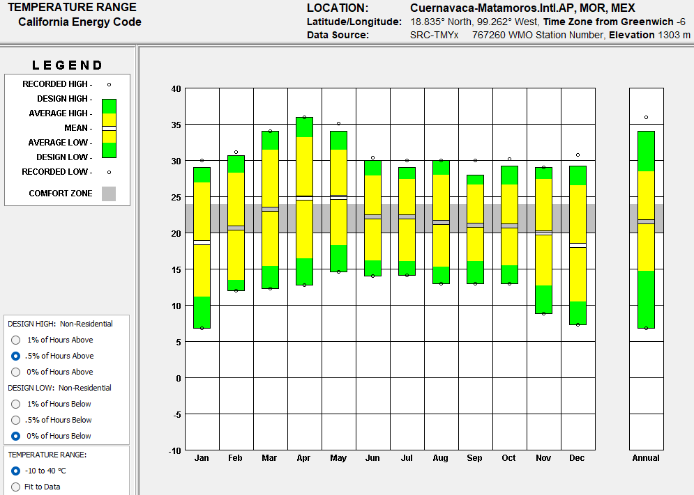
Después de Weather Data y Climate Consultant, la libreta permite verificar con datos:
Hasta este punto los asistentes solo ejecutan celdas. La actividad empieza después de tener las gráficas e indicadores.
from pathlib import Path
import pandas as pd
import plotly.express as px
ROOT = Path.cwd()
EMA_CSV = ROOT / "data" / "emas" / "INSTITUTO_MEXICANO_DE_TECNOLOG__A_DEL_AGUA_90_dias.csv"
with EMA_CSV.open(encoding="utf-8-sig") as f:
lines = f.readlines()
header_row = next(
i for i, line in enumerate(lines)
if line.startswith('"Fecha Local"')
)
ema = pd.read_csv(EMA_CSV, skiprows=header_row)
ema["Fecha Local"] = pd.to_datetime(ema["Fecha Local"])
ema = ema.sort_values("Fecha Local")Qué se explica:
ema_daily = ema.set_index("Fecha Local").resample("D").agg({
"Temperatura del Aire (°C)": "mean",
"Humedad relativa (%)": "mean",
"Radiación Solar (W/m²)": lambda x: x.sum() / 6 / 1000
})
fig = px.line(
ema_daily.reset_index(),
x="Fecha Local",
y=["Temperatura del Aire (°C)", "Humedad relativa (%)"],
title="EMA IMTA: temperatura y humedad diaria",
labels={"value": "°C / %", "variable": "Variable"}
)
fig.show()epw_cols = [
"year","month","day","hour","minute","datasource",
"dry_bulb","dew_point","rh","pressure",
"extr_horiz_rad","extr_direct_norm_rad","horiz_ir",
"ghi","dni","dhi",
"global_horiz_illum","direct_norm_illum",
"diffuse_horiz_illum","zenith_lum",
"wind_dir","wind_speed"
]
epw = pd.read_csv(
EPW,
skiprows=8,
header=None,
names=epw_cols,
usecols=range(len(epw_cols))
)Lectura:
dry_bulb, rh, ghi y wind_speed son suficientes para el análisis inicial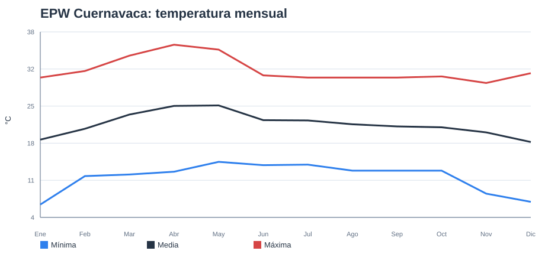
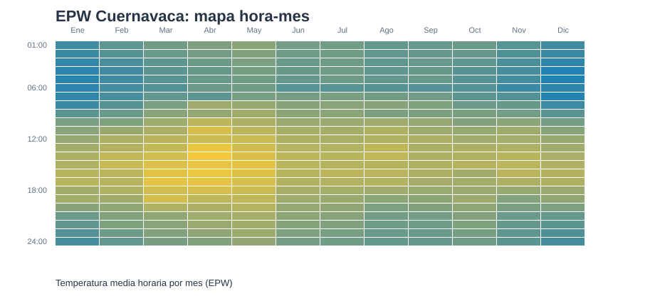
Responder usando Weather Data, Climate Consultant y Jupyter:
Entrega: una lectura de Weather Data, una lectura de Climate Consultant, una gráfica o tabla de Jupyter y una interpretación de 5 a 7 líneas.
Después del análisis climático, el EPW puede alimentar un ejemplo de evaluación térmica:
EnerHabitat se presenta como aplicación avanzada desarrollada en el IER-UNAM.
Referencia: https://pypi.org/project/enerhabitat/
El ejemplo usa el mismo EPW del taller, materials.ini y gráficas simples de Matplotlib.
from enerhabitat import Location, System, config
config.file = "materials.ini"
location = Location("data/epw/MEX_MOR_...TMYx.epw")
orientaciones = {
"Norte": 0,
"Este": 90,
"Sur": 180,
"Oeste": 270,
}
for nombre, azimuth in orientaciones.items():
location.meanDay(day=15, month=5, year=2026)
muro = System(
location=location,
tilt=90,
azimuth=azimuth,
absortance=0.65,
layers=[("Concreto", 0.12), ("Aislamiento", 0.05), ("Yeso", 0.015)],
)
tsa = muro.Tsa()Qué se muestra:
materials.ini define propiedades térmicas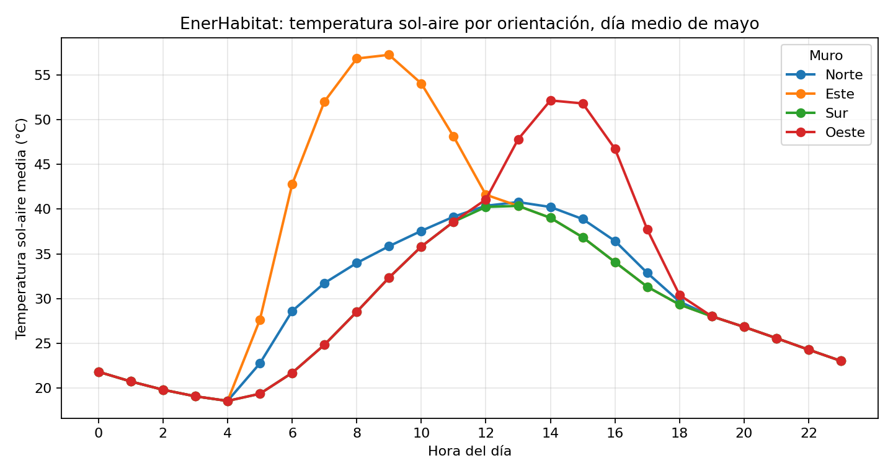
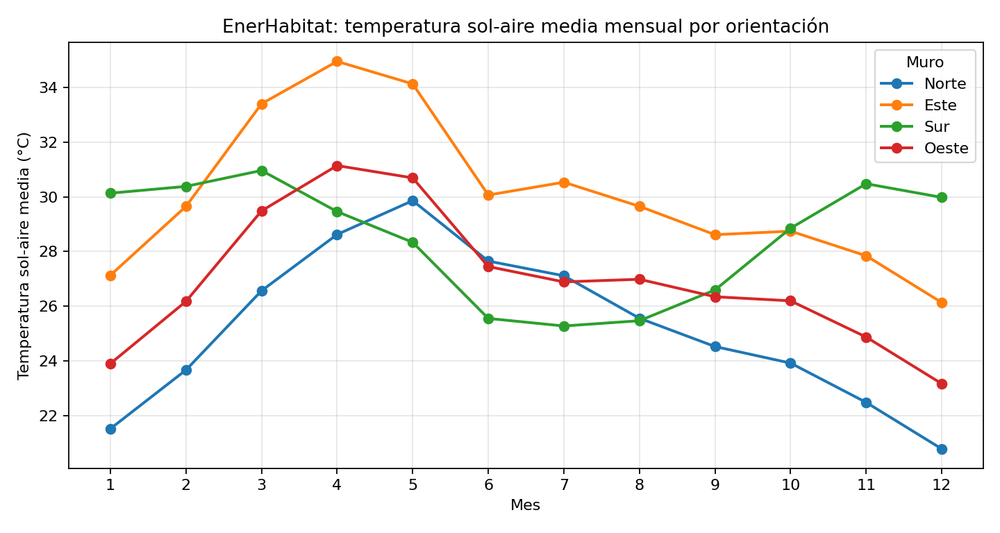
Lectura: ¿qué orientación es más crítica en el día medio y cuál se mantiene alta durante el año?
Gracias.
Julio Landa
Ciencia de datos y metodología para análisis del clima
Analizar clima es pasar de archivos a interpretación.
Contacto: